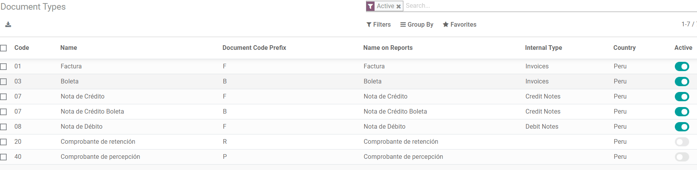
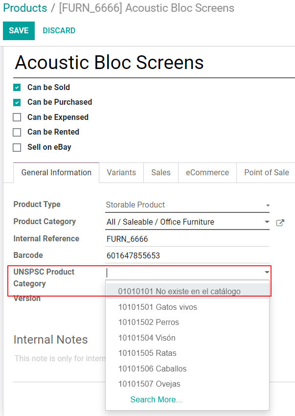
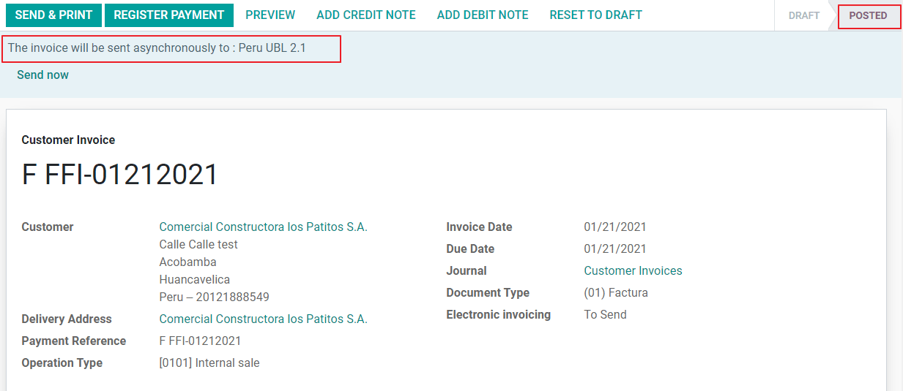

ประเทศเปรู¶
โมดูล¶
Install the following modules to utilize all the current features of the Peruvian localization.
ชื่อ |
ชื่อทางเทคนิค |
คำอธิบาย |
|---|---|---|
Peru - Accounting |
|
Adds accounting features for the Peruvian localization, which represent the minimal configuration required for a company to operate in Peru and under the SUNAT regulations and guidelines. The main elements included in this module are the chart of accounts, taxes, document types. |
Peru - E-invoicing |
|
Includes all technical and functional requirements to generate and receive electronic invoices online based on the SUNAT regulations. |
Peru - Accounting Reports |
|
Includes the following financial reports:
|
Peruvian - Electronic Delivery Note |
|
Adds the delivery guide (Guía de Remisión), which is needed as proof that you are sending goods between A and B. It is only when a delivery order is validated that the delivery guide can be created. |
Peruvian eCommerce |
|
Enables the identification type in eCommerce checkout forms and the ability to generate electronic invoices. |
Peruvian - Point of Sale with PE Doc |
|
Enables contact fiscal information to be editable from a PoS Session to generate electronic invoices and refunds. |
Note
Odoo จะติดตั้งแพ็คเกจที่เหมาะสมสำหรับบริษัทโดยอัตโนมัติตามประเทศที่เลือกในการสร้างฐานข้อมูล
The Peruvian - Electronic Delivery Guide module depends on the Inventory application to be installed.
การกำหนดค่า¶
ติดตั้งโมดูลการประยุกต์ใช้สำหรับประเทศเปรู¶
ไปที่ แอป และค้นหา เปรู จากนั้นคลิกติดตั้งในโมดูล EDI สำหรับประเทศเปรูโมดูลนี้ขึ้นอยู่กับ ประเทศเปรู - ระบบบัญชี ในกรณีที่ไม่ได้ติดตั้งอันสุดท้ายนี้ Odoo จะติดตั้งภายใน EDI โดยอัตโนมัติ

Note
เมื่อคุณติดตั้งฐานข้อมูลตั้งแต่เริ่มต้น โดยเลือกเปรูเป็นประเทศ Odoo จะติดตั้งโมดูลฐานโดยอัตโนมัติ: ประเทศเปรู - ระบบบัญชี
กำหนดค่าบริษัทของคุณ¶
นอกจากข้อมูลพื้นฐานในบริษัทแล้ว เรายังต้องตั้งค่าเปรูเป็นประเทศ ซึ่งจำเป็นสำหรับใบแจ้งหนี้อิเล็กทรอนิกส์ในการทำงานอย่างถูกต้อง ฟิลด์ รหัสประเภทที่อยู่ แสดงถึงรหัสสถานประกอบการที่กำหนดโดย SUNAT เมื่อบริษัทลงทะเบียน RUC (การลงทะเบียนผู้สนับสนุนที่ไม่ซ้ำกัน):

Tip
ในกรณีที่ไม่ทราบรหัสชนิดที่อยู่ คุณสามารถตั้งค่าเป็นค่าเริ่มต้นได้: 0000 โปรดทราบว่าหากป้อนค่าไม่ถูกต้อง การตรวจสอบใบแจ้งหนี้อิเล็กทรอนิกส์อาจมีข้อผิดพลาด
Note
NIF ควรตั้งค่าตามรูปแบบ RUC
ผังบัญชี¶
ผังบัญชีได้รับการติดตั้งตามค่าเริ่มต้นโดยเป็นส่วนหนึ่งของชุดข้อมูลที่รวมอยู่ในโมดูลการประยุกต์ใช้ บัญชีจะถูกแมปโดยอัตโนมัติใน:
ภาษี
บัญชีเจ้าหนี้เริ่มต้น
บัญชีลูกหนี้เริ่มต้น
ผังบัญชีสำหรับประเทศเปรูอิงตามเวอร์ชันล่าสุดของ PCGE ซึ่งจัดกลุ่มเป็นหลายประเภทและเข้ากันได้กับการบัญชี NIIF
การตั้งค่าการบัญชี¶
เมื่อติดตั้งโมดูลและตั้งค่าข้อมูลพื้นฐานของบริษัทของคุณแล้ว คุณจะต้องกำหนดค่าองค์ประกอบที่จำเป็นสำหรับใบแจ้งหนี้อิเล็กทรอนิกส์ สำหรับสิ่งนี้ ให้ไปที่
แนวคิดเบื้องต้น¶
ต่อไปนี้เป็นคำศัพท์บางคำที่จำเป็นสำหรับการประยุกต์ใช้สำหรับประเทศเปรู:
EDI: การแลกเปลี่ยนข้อมูลทางอิเล็กทรอนิกส์ ซึ่งในที่นี้หมายถึงใบแจ้งหนี้อิเล็กทรอนิกส์
SUNAT: เป็นองค์กรที่บังคับใช้ภาษีศุลกากรและภาษีในประเทศเปรู
OSE: ผู้ดำเนินการบริการอิเล็กทรอนิกส์ คำจำกัดความของ OSE SUNAT.
CDR: ใบรับรองการรับ (Constancia de Recepción)
ข้อมูลรับรอง SOL: Sunat Operaciones en Línea ผู้ใช้และรหัสผ่านจัดทำโดย SUNAT และให้สิทธิ์การเข้าถึงระบบปฏิบัติการออนไลน์
ผู้ให้บริการลายเซ็น¶
ตามข้อกำหนดสำหรับใบแจ้งหนี้อิเล็กทรอนิกส์ในประเทศเปรู บริษัทของคุณต้องเลือกผู้ให้บริการลายเซ็นที่จะดูแลกระบวนการลงนามเอกสารและจัดการการตอบกลับการตรวจสอบความถูกต้องของ SUNAT Odoo มีสามตัวเลือก:
IAP (Odoo การซื้อในแอป)
Digiflow
SUNAT
โปรดดูส่วนด้านล่างเพื่อตรวจสอบรายละเอียดและข้อควรพิจารณาสำหรับแต่ละตัวเลือก
IAP (Odoo การซื้อในแอป)¶
นี่เป็นค่าเริ่มต้นและเป็นตัวเลือกที่แนะนำ โดยพิจารณาจากใบรับรองดิจิทัลที่รวมไว้เป็นส่วนหนึ่งของบริการ

IAP คืออะไร?¶
นี่คือบริการเฉพาะที่ Odoo เสนอโดยตรง โดยบริการจะดูแลขั้นตอนถัดไป:
ให้ใบรับรองใบแจ้งหนี้แบบอิเล็กทรอนิกส์ ดังนั้นคุณไม่จำเป็นต้องได้มาด้วยตนเอง
ส่งเอกสารไปยัง OSE ในกรณีนี้คือ Digiflow
รับการตรวจสอบ OSE และ CDR
มันทำงานอย่างไร?¶
บริการนี้ต้องใช้เครดิตเพื่อประมวลผลเอกสารอิเล็กทรอนิกส์ของคุณ Odoo มอบ 1,000 เครดิตให้ฟรีในฐานข้อมูลใหม่ หลังจากใช้เครดิตเหล่านี้หมดแล้ว คุณจะต้องซื้อแพ็คเกจเครดิตเพิ่มเติม
เครดิต |
EUR |
|---|---|
1000 |
22 |
5000 |
110 |
10,000 |
220 |
20,000 |
440 |
เครดิตจะถูกใช้ตามเอกสารแต่ละฉบับที่ส่งไปยัง OSE
Important
หากคุณมีข้อผิดพลาดในการตรวจสอบความถูกต้องและจำเป็นต้องส่งเอกสารอีกครั้ง เราจะเรียกเก็บเงินเพิ่มอีก 1 เครดิต ดังนั้นจึงเป็นสิ่งสำคัญยิ่งที่คุณจะต้องตรวจสอบข้อมูลทั้งหมดให้ถูกต้องก่อนที่จะส่งเอกสารของคุณไปยัง OSE
คุณต้องทำอะไรบ้าง?¶
ใน Odoo เมื่อสัญญาระดับองค์กรของคุณเปิดใช้งานและคุณเริ่มทำงานในฝ่ายการผลิต คุณจะต้องซื้อเครดิตเมื่อมีการใช้งาน 1,000 เครดิตแรก
เนื่องจาก Digiflow เป็น OSE ที่ใช้ใน IAP คุณจึงต้องเชื่อมโยงเป็น OSE อย่างเป็นทางการสำหรับบริษัทของคุณบนเว็บไซต์ SUNAT นี่เป็นขั้นตอนง่ายๆ สำหรับข้อมูลเพิ่มเติม โปรดตรวจสอบ คู่มือการเชื่อมโยง OSE
ลงทะเบียน Digiflow เป็น PSE ที่ได้รับอนุญาต โปรดตรวจสอบ คู่มือ PSE Affiliation
Digiflow¶
ตัวเลือกนี้สามารถใช้เป็นทางเลือกแทนการใช้บริการ IAP คุณสามารถส่งการตรวจสอบเอกสารของคุณโดยตรงไปยัง Digiflow ในกรณีนี้คุณต้องพิจารณา:
ซื้อใบรับรองดิจิทัลของคุณเอง: สำหรับรายละเอียดเพิ่มเติมเกี่ยวกับรายชื่อผู้จำหน่ายอย่างเป็นทางการ และขั้นตอนในการรับใบรับรอง โปรดดูที่ ใบรับรองดิจิทัล SUNAT
ลงนามข้อตกลงการบริการโดยตรงกับ Digiflow
ระบุข้อมูลรับรอง SOL ของคุณ

SUNAT¶
ในกรณีที่บริษัทของคุณต้องการลงนามโดยตรงกับ SUNAT คุณสามารถเลือกตัวเลือกนี้ในการกำหนดค่าของคุณได้ ในกรณีนี้ คุณต้องพิจารณา: - รับกระบวนการรับรอง SUNAT ที่ได้รับการยอมรับ
ซื้อใบรับรองดิจิทัลของคุณเอง: สำหรับรายละเอียดเพิ่มเติมเกี่ยวกับรายชื่อผู้จำหน่ายอย่างเป็นทางการ และขั้นตอนในการรับใบรับรอง โปรดดูที่ ใบรับรองดิจิทัล SUNAT
ให้ข้อมูลประจำตัว SOL กับคุณ
Important
เมื่อใช้การเชื่อมต่อโดยตรงกับ SUNAT ผู้ใช้ SOL จะต้องตั้งค่าด้วย Company RUT + User Id ตัวอย่าง: 20121888549JOHNSMITH
สภาพแวดล้อมการทดสอบ¶
Odoo มีสภาพแวดล้อมการทดสอบที่สามารถเปิดใช้งานได้ก่อนที่บริษัทของคุณจะเข้าสู่การใช้งานจริง
เมื่อใช้สภาพแวดล้อมการทดสอบและลายเซ็น IAP คุณไม่จำเป็นต้องซื้อเครดิตทดสอบสำหรับธุรกรรมของคุณ เนื่องจากเครดิตทั้งหมดได้รับการตรวจสอบความถูกต้องตามค่าเริ่มต้น
Tip
ตามค่าเริ่มต้น ฐานข้อมูลจะถูกตั้งค่าให้ใช้งานจริง ตรวจสอบให้แน่ใจว่าได้เปิดใช้งานโหมดการทดสอบหากจำเป็น
ใบรับรอง¶
ในกรณีที่คุณไม่ได้ใช้ Odoo IAP ในการสร้างลายเซ็นใบแจ้งหนี้อิเล็กทรอนิกส์ จำเป็นต้องมีใบรับรองดิจิทัลที่มีนามสกุล .pfx ดำเนินการในส่วนนี้แล้วโหลดไฟล์และรหัสผ่านของคุณ

หลายสกุลเงิน¶
The official currency exchange rate in Peru is provided by the SUNAT. Odoo can connect directly to its services and get the currency rate either automatically or manually.

โปรดดูส่วนถัดไปในเอกสารประกอบของเราสำหรับข้อมูลเพิ่มเติมเกี่ยวกับ หลายสกุลเงิน
กำหนดค่าข้อมูลหลัก¶
ภาษี¶
เนื่องจากเป็นส่วนหนึ่งของโมดูลการประยุกต์ใช้ ภาษีจะถูกสร้างขึ้นโดยอัตโนมัติด้วยบัญชีการเงินที่เกี่ยวข้องและการกำหนดค่าใบแจ้งหนี้อิเล็กทรอนิกส์

การกำหนดค่า EDI¶
เนื่องจากเป็นส่วนหนึ่งของการกำหนดค่าภาษี มีฟิลด์ใหม่สามฟิลด์ที่จำเป็นสำหรับใบแจ้งหนี้อิเล็กทรอนิกส์ ภาษีที่สร้างขึ้นโดยค่าเริ่มต้นจะมีข้อมูลนี้รวมอยู่ด้วย แต่ในกรณีที่คุณสร้างภาษีใหม่ ตรวจสอบให้แน่ใจว่าคุณได้กรอกข้อมูลในฟิลด์:

ฐานะทางการเงิน¶
มีสองตำแหน่งทางการเงินหลักที่รวมไว้ตามค่าเริ่มต้นเมื่อคุณติดตั้งการประยุกต์ใช้สำหรับประเทศเปรู
Extranjero - Exportación: ตั้งค่าสถานะทางการเงินนี้ให้กับลูกค้าสำหรับธุรกรรมการส่งออก
ประเทศเปรูในท้องถิ่น: กำหนดสถานะทางการเงินนี้กับลูกค้าในพื้นที่
ประเภทเอกสาร¶
ในบางประเทศในละตินอเมริกา รวมถึงประเทศเปรู ธุรกรรมทางบัญชีบางอย่าง เช่น ใบแจ้งหนี้และใบเรียกเก็บเงินของผู้จำหน่าย จะถูกจัดประเภทตามชนิดเอกสาร ที่กำหนดโดยหน่วยงานด้านการเงินของรัฐบาล ในกรณีนี้คือ SUNAT
เอกสารแต่ละประเภทสามารถมีลำดับที่ไม่ซ้ำกันสำหรับแต่ละสมุดรายวันที่ได้รับการมอบหมาย ในฐานะที่เป็นส่วนหนึ่งของการประยุกต์ใช้ ประเภทเอกสารจะรวมประเทศที่เอกสารนั้นสามารถใช้ได้ ข้อมูลจะถูกสร้างขึ้นโดยอัตโนมัติเมื่อมีการติดตั้งโมดูลการประยุกต์ใช้
ข้อมูลที่จำเป็นสำหรับประเภทเอกสารจะถูกรวมไว้ตามค่าเริ่มต้น ดังนั้นผู้ใช้จึงไม่จำเป็นต้องกรอกอะไรในมุมมองนี้:
Warning
ปัจจุบันเอกสารที่รองรับในใบแจ้งหนี้ของลูกค้าได้แก่: ใบแจ้งหนี้, Boleta, ใบเพิ่มหนี้ และใบลดหนี้
สมุดรายวัน¶
เมื่อสร้างสมุดรายวันการขาย ต้องกรอกข้อมูลต่อไปนี้ นอกเหนือจากฟิลด์มาตรฐานในสมุดรายวัน:
ใช้งานเอกสาร¶
ฟิลด์นี้ใช้เพื่อกำหนดว่าสมุดรายวันใช้ประเภทเอกสารหรือไม่ ใช้ได้กับสมุดรายวันการซื้อและการขายเท่านั้น ซึ่งเป็นรายการที่เกี่ยวข้องกับชุดของชนิดเอกสารต่างๆ ที่พร้อมใช้งานในประเทศเปรู ตามค่าเริ่มต้น สมุดรายวันการขายทั้งหมดที่สร้างขึ้นจะใช้เอกสาร
การแลกเปลี่ยนข้อมูลทางอิเล็กทรอนิกส์¶
This section indicates which EDI workflow is used in the invoice, for Peru we must select “Peru UBL 2.1”.
Warning
ตามค่าเริ่มต้น ค่า Factur-X (FR) จะแสดงอยู่เสมอ ตรวจสอบให้แน่ใจว่าคุณสามารถยกเลิกการเลือกได้ด้วยตนเอง
พาร์ทเนอร์¶
ประเภทประจำตัวประชาชนและภาษีมูลค่าเพิ่ม¶
เนื่องจากเป็นส่วนหนึ่งของการประยุกต์ใช้สำหรับประเทศเปรู ขณะนี้ประเภทการระบุตัวตนที่กำหนดโดย SUNAT มีอยู่ในแบบฟอร์มคู่ค้า ข้อมูลนี้จำเป็นสำหรับธุรกรรมส่วนใหญ่ทั้งกับบริษัทผู้ส่งและในลูกค้า ตรวจสอบให้แน่ใจว่าคุณกรอกข้อมูลนี้ในบันทึกของคุณ

สินค้า¶
นอกเหนือจากข้อมูลพื้นฐานในผลิตภัณฑ์ของคุณ สำหรับการประยุกต์ใช้สำหรับประเทศเปรูแล้ว รหัส UNSPSC บนผลิตภัณฑ์เป็นค่าที่ต้องกำหนดค่า
การใช้งานและการทดสอบ¶
ใบแจ้งหนี้ของลูกค้า¶
องค์ประกอบ EDI¶
เมื่อคุณกำหนดค่าข้อมูลหลักแล้ว คุณสามารถสร้างใบแจ้งหนี้จากใบสั่งขายหรือด้วยตนเองได้ นอกเหนือจากข้อมูลใบแจ้งหนี้พื้นฐานที่อธิบายไว้ใน หน้าของเราเกี่ยวกับกระบวนการออกใบแจ้งหนี้ ยังมีช่องบางช่องที่ต้องกรอกเพื่อเป็นส่วนหนึ่งของ EDI ประเทศเปรู:
ประเภทเอกสาร: ค่าเริ่มต้นคือ “Factura Electronica” แต่คุณสามารถเปลี่ยนประเภทเอกสารด้วยตนเองได้หากจำเป็น และเลือก Boleta เป็นต้น

ประเภทการดำเนินการ: ค่านี้จำเป็นสำหรับใบแจ้งหนี้อิเล็กทรอนิกส์และระบุประเภทธุรกรรม ค่าเริ่มต้นคือ "การขายภายใน" แต่สามารถเลือกค่าอื่นได้ด้วยตนเองเมื่อจำเป็น เช่น การส่งออกสินค้า

เหตุผลด้านผลกระทบ EDI: ในบรรทัดใบแจ้งหนี้ นอกเหนือจากภาษีแล้ว จะมีช่อง “เหตุผลด้านผลกระทบ EDI” ที่กำหนดขอบเขตภาษีตามรายการ SUNAT ที่แสดง ภาษีทั้งหมดที่โหลดตามค่าเริ่มต้นจะเชื่อมโยงกับเหตุผลของผลกระทบทาง EDI เริ่มต้น หากจำเป็น คุณสามารถเลือกรายการอื่นได้ด้วยตนเองเมื่อสร้างใบแจ้งหนี้

การตรวจสอบใบแจ้งหนี้¶
เมื่อคุณตรวจสอบข้อมูลทั้งหมดในใบแจ้งหนี้ของคุณถูกต้องแล้ว คุณสามารถดำเนินการตรวจสอบต่อไปได้ การดำเนินการนี้จะลงทะเบียนการย้ายบัญชี และกระตุ้นลำดับงานใบแจ้งหนี้อิเล็กทรอนิกส์เพื่อส่งไปยัง OSE และ SUNAT ข้อความต่อไปนี้จะแสดงที่ด้านบนของใบแจ้งหนี้:
อะซิงโครนัสหมายความว่าเอกสารจะไม่ถูกส่งโดยอัตโนมัติหลังจากผ่านรายการใบแจ้งหนี้แล้ว
สถานะใบแจ้งหนี้อิเล็กทรอนิกส์¶
ที่ต้องการส่ง: ระบุว่าเอกสารพร้อมที่จะส่งไปยัง OSE ซึ่งสามารถทำได้โดยอัตโนมัติโดย Odoo ด้วย cron ที่ทำงานทุกชั่วโมง หรือผู้ใช้สามารถส่งทันทีโดยคลิกที่ปุ่ม “ส่งตอนนี้”

ส่งแล้ว: ระบุว่าเอกสารถูกส่งไปยัง OSE และได้รับการตรวจสอบเรียบร้อยแล้ว ในส่วนหนึ่งของการตรวจสอบความถูกต้อง ไฟล์ ZIP จะถูกดาวน์โหลดและข้อความจะถูกบันทึกไว้ในแชทเพื่อระบุการตรวจสอบความถูกต้องของรัฐบาล

ในกรณีที่มีข้อผิดพลาดในการตรวจสอบ สถานะใบแจ้งหนี้อิเล็กทรอนิกส์จะยังคงอยู่ในสถานะ "กำลังส่ง" เพื่อให้สามารถแก้ไขและส่งใบแจ้งหนี้ได้อีกครั้ง
Warning
เครดิตหนึ่งรายการจะถูกใช้ไปในแต่ละครั้งที่คุณส่งเอกสารเพื่อตรวจสอบความถูกต้อง ในกรณีนี้ หากตรวจพบข้อผิดพลาดในใบแจ้งหนี้และคุณส่งอีกครั้ง จะมีการใช้เครดิตทั้งหมดสองรายการ
ข้อผิดพลาดทั่วไป¶
มีเหตุผลหลายอย่างที่อยู่เบื้องหลังการปฏิเสธจาก OSE หรือ SUNAT เมื่อสิ่งนี้เกิดขึ้น Odoo จะส่งข้อความที่ด้านบนของใบแจ้งหนี้เพื่อระบุรายละเอียดข้อผิดพลาด และในกรณีที่พบบ่อยที่สุด จะส่งคำแนะนำในการแก้ไขปัญหา
หากได้รับข้อผิดพลาดในการตรวจสอบ คุณมีสองตัวเลือก:
ในกรณีที่ข้อผิดพลาดเกี่ยวข้องกับข้อมูลหลักเกี่ยวกับคู่ค้า ลูกค้า หรือภาษี คุณสามารถใช้การเปลี่ยนแปลงในบันทึก (ตัวอย่างประเภทการระบุลูกค้า) และเมื่อดำเนินการเสร็จแล้ว ให้คลิกปุ่มลองอีกครั้ง
หากข้อผิดพลาดเกี่ยวข้องกับข้อมูลบางอย่างที่บันทึกไว้ในใบแจ้งหนี้โดยตรง (ประเภทการดำเนินการ ข้อมูลหายไปในบรรทัดใบแจ้งหนี้) วิธีแก้ไขที่ถูกต้องคือการรีเซ็ตใบแจ้งหนี้เป็นฉบับร่างใช้การเปลี่ยนแปลง จากนั้นส่งใบแจ้งหนี้อีกครั้งไปที่ SUNAT สำหรับ การตรวจสอบอื่น

สำหรับรายละเอียดเพิ่มเติม โปรดดูที่ ข้อผิดพลาดทั่วไปใน SUNAT
รายงานใบแจ้งหนี้ PDF¶
หลังจากที่ SUNAT ยอมรับและตรวจสอบใบแจ้งหนี้แล้ว ก็สามารถพิมพ์รายงานใบแจ้งหนี้ PDF ได้ รายงานประกอบด้วยรหัส QR โค้ดซึ่งระบุว่าใบแจ้งหนี้เป็นเอกสารทางการเงินที่ถูกต้อง
IAP เครดิต¶
IAP อิเล็กทรอนิกส์ของ Odoo เสนอเครดิตฟรี 1,000 เครดิต หลังจากใช้เครดิตเหล่านี้ในฐานข้อมูลที่ใช้งานจริงของคุณแล้ว บริษัทของคุณจะต้องซื้อเครดิตใหม่เพื่อประมวลผลธุรกรรมของคุณ
เมื่อคุณได้ใช้เครดิตหมดแล้ว ป้ายสีแดงจะแสดงที่ด้านบนของใบแจ้งหนี้เพื่อระบุว่าจำเป็นต้องมีเครดิตเพิ่มเติม คุณสามารถซื้อเครดิตเหล่านั้นได้อย่างง่ายดายโดยเข้าไปที่ลิงก์ที่ให้ไว้ในข้อความ

ในบริการ IAP ประกอบด้วยแพ็คเกจที่มีราคาแตกต่างกันตามจำนวนเครดิต รายการราคาใน IAP จะแสดงเป็นสกุลเงิน EUR เสมอ
กรณีการใช้งานพิเศษ¶
ขั้นตอนการยกเลิก¶
บางสถานการณ์จำเป็นต้องมีการยกเลิกใบแจ้งหนี้ ตัวอย่างเช่น เมื่อมีการสร้างใบแจ้งหนี้โดยไม่ได้ตั้งใจ หาก SUNAT ส่งและตรวจสอบใบแจ้งหนี้แล้ว วิธีที่ถูกต้องในการดำเนินการคือคลิกที่ปุ่มขอยกเลิก:

หากต้องการยกเลิกใบแจ้งหนี้ โปรดระบุเหตุผลในการยกเลิก
สถานะใบแจ้งหนี้อิเล็กทรอนิกส์¶
หากต้องการยกเลิก: ระบุว่าคำขอยกเลิกพร้อมที่จะส่งไปยัง OSE ซึ่งสามารถทำได้โดยอัตโนมัติโดย Odoo ด้วย cron ที่ทำงานทุกชั่วโมง หรือผู้ใช้สามารถส่งได้ทันทีโดยคลิกที่ปุ่ม "ส่งเดี๋ยวนี้". เมื่อส่งแล้ว ตั๋วยกเลิกจะถูกสร้างขึ้น ผลที่ได้คือข้อความถัดไปและไฟล์ CDR จะถูกบันทึกไว้ในช่องแชท:

ยกเลิกแล้ว: ระบุว่าคำขอยกเลิกถูกส่งไปยัง OSE และได้รับการตรวจสอบเรียบร้อยแล้ว ในส่วนหนึ่งของการตรวจสอบความถูกต้อง ไฟล์ ZIP จะถูกดาวน์โหลดและข้อความจะถูกบันทึกไว้ในแชทเพื่อระบุการตรวจสอบความถูกต้องของรัฐบาล

Warning
มีการใช้หนึ่งเครดิตต่อคำขอยกเลิกแต่ละครั้ง
Export invoices¶
เมื่อสร้างใบแจ้งหนี้การส่งออก ให้คำนึงถึงข้อควรพิจารณาถัดไป:
ประเภทข้อมูลประจำตัวของลูกค้าของคุณต้องเป็นรหัสต่างประเทศ
ประเภทการดำเนินการในใบแจ้งหนี้ของคุณต้องเป็นประเภทการส่งออก
ภาษีที่รวมอยู่ในรายการใบแจ้งหนี้ควรเป็นภาษี EXP

การชำระเงินล่วงหน้า¶
สร้างใบแจ้งหนี้การชำระเงินล่วงหน้าและใช้การชำระเงินที่เกี่ยวข้อง
สร้างใบแจ้งหนี้ใบสุดท้ายโดยไม่พิจารณาการชำระเงินล่วงหน้า
สร้างใบลดหนี้สำหรับใบแจ้งหนี้ฉบับสุดท้ายพร้อมจำนวนเงินที่ชำระล่วงหน้า
กระทบยอดใบลดหนี้กับใบแจ้งหนี้สุดท้าย
ยอดคงเหลือในใบแจ้งหนี้สุดท้ายควรชำระด้วยธุรกรรมการชำระเงินตามปกติ
ใบแจ้งหนี้ที่ถูกเพิกถอน¶
เมื่อสร้างใบแจ้งหนี้ที่อยู่ภายใต้การถอนให้คำนึงถึงข้อควรพิจารณาถัดไป:
ผลิตภัณฑ์ทั้งหมดที่รวมอยู่ในใบแจ้งหนี้ต้องมีการกำหนดค่าช่องเหล่านี้:

ประเภทการดำเนินการในใบแจ้งหนี้ของคุณต้องเป็น
1001
ใบลดหนี้¶
เมื่อจำเป็นต้องแก้ไขหรือคืนเงินในใบแจ้งหนี้ที่ได้รับการตรวจสอบแล้ว จะต้องสร้างใบลดหนี้ โดยคลิกที่ปุ่ม "เพิ่มใบลดหนี้" ซึ่งเป็นส่วนหนึ่งของการประยุกต์ใช้สำหรับประเทศเปรู คุณต้องพิสูจน์เหตุผลด้านเครดิตโดยเลือกหนึ่งในตัวเลือกในรายการ

Tip
เมื่อสร้างใบลดหนี้ใบแรกของคุณ ให้เลือกวิธีการให้เครดิต: การคืนเงินบางส่วน ซึ่งจะช่วยให้คุณสามารถกำหนดลำดับใบลดหนี้ได้
ตามค่าเริ่มต้น ใบลดหนี้จะถูกตั้งค่าเป็นประเภทเอกสาร:

เพื่อให้ขั้นตอนการทำงานเสร็จสิ้น โปรดปฏิบัติตามคำแนะนำใน หน้าของเราเกี่ยวกับใบลดหนี้
Note
ลำดับงาน EDI สำหรับใบลดหนี้ทำงานในลักษณะเดียวกับใบแจ้งหนี้
ใบเพิ่มหนี้¶
ในฐานะที่เป็นส่วนหนึ่งของการประยุกต์ใช้สำหรับประเทศเปรู นอกเหนือจากการสร้างใบเพิ่มหนี้จากเอกสารที่มีอยู่แล้ว คุณยังสามารถสร้างใบเพิ่มหนี้ได้อีกด้วย สำหรับสิ่งนี้ เพียงใช้ปุ่ม “เพิ่มใบเพิ่มหนี้”
ตามค่าเริ่มต้น ใบเพิ่มหนี้จะถูกตั้งค่าเป็นประเภทเอกสาร
คู่มือการจัดส่งแบบอิเล็กทรอนิกส์ 2.0¶
Guía de Remisión Electrónica (GRE) เป็นเอกสารอิเล็กทรอนิกส์ที่ผู้จัดส่งสร้างขึ้นเพื่อรองรับการขนส่งหรือการโอนสินค้าจากที่หนึ่งไปยังอีกที่หนึ่ง เช่น คลังสินค้าหรือสถานประกอบการ ใน Odoo จำเป็นต้องมีขั้นตอนการกำหนดค่าหลายขั้นตอนก่อนที่คุณจะสามารถใช้ฟีเจอร์นี้ได้สำเร็จ
การใช้เอกสารอิเล็กทรอนิกส์ guía de remisión electrónica ถือเป็นข้อบังคับและกำหนดโดย SUNAT สำหรับผู้เสียภาษีที่ต้องการโอนผลิตภัณฑ์ของตน ยกเว้นผู้ที่อยู่ภายใต้ Single Simplified Regime (régimen único simplificado หรือ RUS)
ประเภทคู่มือการจัดส่ง¶
ผู้ส่ง¶
ประเภทคู่มือการจัดส่ง ผู้ส่ง จะออกเมื่อมีการขาย มีการให้บริการ (รวมถึงการประมวลผล) สินค้าถูกกำหนดให้ใช้ หรือสินค้ามีการโอนระหว่างสถานที่ของบริษัทเดียวกันและบุคคลอื่น
คู่มือการจัดส่งนี้ออกโดยเจ้าของสินค้า (เช่น ผู้ส่ง) เมื่อเริ่มต้นการจัดส่ง Odoo รองรับคู่มือการจัดส่งของผู้ส่ง
See also
ผู้ให้บริการ¶
ประเภทคู่มือการจัดส่ง ผู้ขนส่ง จะช่วยระบุบริการขนส่งที่คนขับ (หรือผู้ขนส่ง) ดำเนินการ
คู่มือการจัดส่งนี้ออกโดยผู้ขนส่งและจะต้องออกให้กับผู้จัดส่งแต่ละรายเมื่อพัสดุผ่านระบบขนส่งสาธารณะ
Important
คู่มือการจัดส่งของผู้ให้บริการขนส่งไม่ได้รับการรองรับใน Odoo
ประเภทการขนส่ง¶
ส่วนตัว¶
ตัวเลือกประเภทการขนส่ง ส่วนตัว จะใช้เมื่อเจ้าของขนส่งสินค้าโดยใช้ยานพาหนะของตนเอง ในกรณีนี้ จะต้องออกคู่มือการจัดส่งของผู้ส่ง
สาธารณะ¶
ตัวเลือกประเภท การขนส่งสาธารณะ จะใช้เมื่อผู้ให้บริการขนส่งภายนอกทำการเคลื่อนย้ายสินค้า ในกรณีนี้ จะต้องออกคู่มือการจัดส่งสองฉบับ ได้แก่ คู่มือการจัดส่งของผู้ส่งและคู่มือการจัดส่งของผู้ขนส่ง
ส่งตรงถึง SUNAT¶
การสร้าง GRE คู่มือการจัดส่งใน Odoo ต้อง ส่งโดยตรงไปยัง SUNAT โดยไม่คำนึงถึงผู้ให้บริการเอกสารอิเล็กทรอนิกส์: IAP, Digiflow หรือ SUNAT
ข้อมูลที่จำเป็น¶
คู่มือการจัดส่งแบบอิเล็กทรอนิกส์เวอร์ชัน 2.0 ต้องการข้อมูลเพิ่มเติมเกี่ยวกับการกำหนดค่าทั่วไป ยานพาหนะ ผู้ติดต่อ และผลิตภัณฑ์ ในการกำหนดค่าทั่วไป จำเป็นต้องเพิ่มข้อมูลประจำตัวใหม่ที่คุณสามารถดึงข้อมูลจากพอร์ทัล SUNAT
การยกเลิก¶
ผู้ส่งและผู้ให้บริการ ทั้งคู่ สามารถยกเลิกใบตราส่งสินค้าทางอิเล็กทรอนิกส์ได้ตราบใดที่ตรงตามเงื่อนไขต่อไปนี้:
ยังไม่ได้เริ่มการจัดส่ง
หากเริ่มการจัดส่งแล้ว ชื่อของผู้รับจะ ต้อง ถูกเปลี่ยนก่อนที่จะถึงจุดหมายปลายทาง
Important
SUNAT ไม่ใช้คำว่า "Anula" อีกต่อไป แต่ปัจจุบันใช้คำว่า "Dar de baja" ในการยกเลิก
ทดสอบ¶
SUNAT ไม่รองรับสภาพแวดล้อมการทดสอบ ซึ่งหมายความว่าคู่มือการจัดส่งที่สร้างขึ้นโดยไม่ได้ตั้งใจ จะต้อง ถูกส่งไปยัง SUNAT
หากมีการสร้างใบนำส่งสินค้าในสภาพแวดล้อมนี้โดยไม่ได้ตั้งใจ จำเป็นต้องลบออกจากพอร์ทัล SUNAT
การกำหนดค่า¶
Important
GRE ของผู้ส่งทางอิเล็กทรอนิกส์ ปัจจุบันเป็นใบนำส่งสินค้าประเภทเดียวที่รองรับใน Odoo
คู่มือการนำส่งจะขึ้นอยู่กับแอป Odoo สินค้าคงคลัง, โมดูล l10n_pe_edi และ l10n_pe
ผู้ใช้คนที่สอง ต้อง ถูกเพิ่มเพื่อสร้างเอกสารอิเล็กทรอนิกส์
After following the steps to configure the electronic invoicing
and the master data, install the
Peruvian - Electronic Delivery Note 2.0 module (l10n_pe_edi_stock_20).
ถัดไป คุณต้องดึงข้อมูล ID ลูกค้า และ รหัสลูกค้า จาก SUNAT โดยทำตาม manual de servicios web plataforma nueva GRE
Note
ในพอร์ทัล SUNAT สิ่งสำคัญคือต้องเปิดใช้งานสิทธิ์การเข้าถึงที่ถูกต้อง เนื่องจากอาจแตกต่างจากที่ผู้ใช้กำหนดไว้สำหรับการออกใบแจ้งหนี้อิเล็กทรอนิกส์
ข้อมูลประจำตัวเหล่านี้ควรใช้เพื่อกำหนดการตั้งค่าทั่วไปของคู่มือการจัดส่งจาก

Note
จำเป็นต้องเป็นไปตามรูปแบบ RUC + UsuarioSol (เช่น 20557912879SOLUSER) สำหรับช่อง คู่มือผู้ใช้ SOL ขึ้นอยู่กับผู้ใช้ที่เลือกเมื่อสร้าง GRE ข้อมูลรับรอง API ในพอร์ทัล SUNAT
ผู้ปฏิบัติการ¶
ผู้ดำเนินการ คือผู้ขับขี่ยานพาหนะ ในกรณีที่คู่มือการนำส่งเป็นการขนส่ง ส่วนตัว
หากต้องการสร้างโอเปอเรเตอร์ใหม่ ให้ไปที่ และกรอกข้อมูลผู้ติดต่อ
ขั้นแรก เลือก ส่วนบุคคล เป็น ประเภทบริษัท จากนั้น เพิ่ม ใบอนุญาตประกอบการ ในแท็บ ระบบบัญชี ของแบบฟอร์มการติดต่อ
สำหรับที่อยู่ลูกค้า ตรวจสอบให้แน่ใจว่าช่องต่อไปนี้ครบถ้วน:
เขต
หมายเลขประจำตัวผู้เสียภาษี (DNI/RUC)
หมายเลขประจำตัวผู้เสียภาษี

ผู้ให้บริการ¶
ผู้ให้บริการ จะใช้เมื่อคู่มือการจัดส่งผ่าน ระบบขนส่งสาธารณะ
หากต้องการสร้างผู้ให้บริการรายใหม่ ให้ไปที่ และกรอกข้อมูลผู้ติดต่อ
ขั้นแรก เลือก บริษัท เป็น ประเภทบริษัท จากนั้น เพิ่ม หมายเลขทะเบียน MTC, หน่วยงานผู้ออกใบอนุญาต และ หมายเลขการอนุญาต
สำหรับที่อยู่บริษัท ตรวจสอบให้แน่ใจว่าช่องต่อไปนี้ครบถ้วน:
เขต
หมายเลขประจำตัวผู้เสียภาษี (DNI/RUC)
หมายเลขประจำตัวผู้เสียภาษี

ยานพาหนะ¶
หากต้องการกำหนดค่ายานพาหนะที่มีอยู่ ให้ไปที่ และกรอกแบบฟอร์มยานพาหนะพร้อมข้อมูลที่จำเป็นสำหรับยานพาหนะ:
ชื่อยานพาหนะ
ป้ายทะเบียน
M1 หรือ L?
หน่วยงานที่ออกการอนุญาตพิเศษ
หมายเลขการอนุญาต
ตัวดำเนินการเริ่มต้น
บริษัท
Important
สิ่งสำคัญคือต้องตรวจสอบช่องทำเครื่องหมาย เป็น M1 หรือ L? หากยานพาหนะมีน้อยกว่าสี่ล้อหรือมีที่นั่งน้อยกว่าแปดที่นั่ง

สินค้า¶
หากต้องการกำหนดค่าผลิตภัณฑ์ที่มีอยู่ ให้ไปที่ และเปิดผลิตภัณฑ์ที่จะกำหนดค่า
ตรวจสอบให้แน่ใจว่าข้อมูลที่เกี่ยวข้องในแบบฟอร์มผลิตภัณฑ์ได้รับการกำหนดค่าอย่างสมบูรณ์ จำเป็นต้องกรอก Partida Arancelaria (รายการภาษี)
การสร้าง GRE¶
เมื่อสร้างการจัดส่งจากสินค้าคงคลังในระหว่างขั้นตอนการขายแล้ว ตรวจสอบให้แน่ใจว่าคุณกรอก GRE แล้ว ช่องที่ด้านบนขวาของแบบฟอร์มการโอนสำหรับช่องต่างๆ:
ประเภทการขนส่ง
เหตุผลในการโอน
วันที่เริ่มต้นการส่งออก
นอกจากนี้ยังจำเป็นต้องกรอกข้อมูลในช่อง ยานพาหนะ และ ผู้ดำเนินการ ใต้แท็บ Guia de Remision PE
การโอนการจัดส่งจะต้องทำเครื่องหมายเป็น เสร็จสิ้น เพื่อให้ปุ่ม Generar Guia de Remision แสดงบนเมนูด้านซ้ายของแบบฟอร์มการโอน

เมื่อแบบฟอร์มการโอนได้รับการตรวจสอบอย่างถูกต้องโดย SUNAT ไฟล์ XML ที่สร้างขึ้นจะพร้อมใช้งานในการพูดคุย ตอนนี้คุณสามารถพิมพ์ใบส่งสินค้าที่แสดงรายละเอียดการโอนเงินและรหัส QR โค้ดที่ได้รับการตรวจสอบโดย SUNAT

ข้อผิดพลาดทั่วไป¶
Diferente prefijo para productos (T001 en algunos, T002 en otros)ในขณะนี้ Odoo ยังไม่รองรับระบบอัตโนมัติของคำนำหน้าสำหรับผลิตภัณฑ์ ซึ่งสามารถทำได้ด้วยตนเองสำหรับผลผลิตแต่ละรายการ นอกจากนี้ยังสามารถทำได้สำหรับผลิตภัณฑ์ที่ไม่สามารถจัดเก็บได้ อย่างไรก็ตาม โปรดทราบว่าจะไม่มีการตรวจสอบย้อนกลับ
2325 - GrossWeightMeasure - El dato no cumple con el formato establecido "Hace falta el campo" "Peso"" en el productoข้อผิดพลาดนี้เกิดขึ้นเมื่อน้ำหนักของสินค้าตั้งค่าเป็น "0.00" เพื่อแก้ไขปัญหานี้ คุณจะต้องยกเลิกใบนำส่งสินค้าและสร้างใหม่ ตรวจสอบให้แน่ใจว่าคุณกำหนดน้ำหนักบนผลิตภัณฑ์ก่อนที่จะสร้างใบตราส่งสินค้าใหม่ ไม่เช่นนั้นจะส่งผลให้เกิดข้อผิดพลาดเดียวกัน
JSONDecodeError: ค่าที่คาดหวัง: บรรทัด 1 คอลัมน์ 1 (ตัวอักษร 0) เมื่อสร้างคู่มือการจัดส่งโดยทั่วไปข้อผิดพลาดนี้จะเกิดขึ้นเนื่องจากปัญหาของผู้ใช้ SOL ตรวจสอบการเชื่อมต่อของผู้ใช้กับ SUNAT; ผู้ใช้ SOL จะต้องถูกสร้างด้วยบริษัท RUT + ID ผู้ใช้ เช่น
2012188549JOHNSMITHEl número de documento relacionado al traslado de mercancía no cumple con el formato establecido: error: documento relacionadoช่อง ประเภทเอกสารที่เกี่ยวข้อง และ หมายเลขเอกสารที่เกี่ยวข้อง ใช้กับใบแจ้งหนี้และใบเสร็จรับเงินเท่านั้น
`400 Client error: คำขอ URL ไม่ถูกต้อง'
ข้อผิดพลาดนี้ไม่สามารถแก้ไขได้ด้วย Odoo เราแนะนำให้คุณติดต่อ SUNAT และตรวจสอบผู้ใช้ อาจจำเป็นต้องสร้างผู้ใช้ใหม่
`พบเนื้อหาที่ไม่ถูกต้องเริ่มต้นด้วยองค์ประกอบ 'cac:BuyerCustomerParty''
ข้อผิดพลาดนี้เกิดขึ้นเมื่อเหตุผลในการโอนถูกตั้งค่าเป็น อื่นๆ โปรดเลือกตัวเลือกอื่น ตามเอกสารอย่างเป็นทางการของคู่มือใบนำส่งสินค้าของ SUNAT เหตุผลในการโอน 03 (การขายพร้อมการจัดส่งไปยังบุคคลที่สาม) หรือ 12 (อื่นๆ) ไม่สามารถใช้งานได้ใน Odoo เนื่องจากคุณไม่ควรมีรายการว่างเปล่า หรือ ลูกค้าเปล่า
Duda cliente: consumo de créditos IAP al usar GRE 2.0สำหรับลูกค้าที่ใช้งานจริงที่ใช้ IAP จะไม่มีการใช้เครดิต (ในทางทฤษฎี) เนื่องจากไม่ผ่าน OSE กล่าวคือ เอกสารเหล่านี้จะถูกส่งโดยตรงไปยัง SUNAT
Errores con formato credenciales GRE 2.0 (traceback error)ขณะนี้ Odoo ส่งข้อผิดพลาดพร้อมการสืบกลับแทนข้อความแจ้งว่าข้อมูลประจำตัวไม่ได้รับการกำหนดค่าอย่างถูกต้องในฐานข้อมูล หากสิ่งนี้เกิดขึ้นกับฐานข้อมูลของคุณ โปรดตรวจสอบข้อมูลรับรองของคุณ
ใบแจ้งหนี้อิเล็กทรอนิกส์อีคอมเมิร์ซ¶
First, install the Peruvian eCommerce (l10n_pe_website_sale) module.
The Peruvian eCommerce module enables the features and configurations to:
allow clients to create online accounts for eCommerce purposes;
support required fiscal fields in the eCommerce application;
receive payments for sales orders online;
generate electronic documents from the eCommerce application.
Note
The Peruvian eCommerce module is dependent on the previous installation of the Invoicing or Accounting app, as well as the Website app.
การกำหนดค่า¶
After configuring the Peruvian electronic invoicing flow, complete the following configurations for the eCommerce flow:
Client account registration;
Automatic invoice;
../../websites/ecommerce/products: Set the Invoicing Policy to Ordered quantities and define the desired Customer taxes.
../../websites/ecommerce/checkout_payment_shipping/shipping: For each shipping method, set the Provider field to Fixed Price. Then, set a Fixed Price amount greater than
0.00(not zero), as the shipping method price is added to the invoice line.
Note
Mercado Pago is an online payment provider supported in Odoo that covers several countries, currencies, and payment methods in Latin America.
Make sure to define a Sales Price on the Delivery Product of the shipping method to prevent errors when validating the invoice with SUNAT.
To offer free delivery, manually remove the Delivery Product, or at least use
$0.01(one cent) for the invoice to be validated with SUNAT.
ขั้นตอนการออกใบแจ้งหนี้สำหรับอีคอมเมิร์ซ¶
Once the configurations are all set, fiscal input fields will be available during the checkout process for signed-in customers.
เมื่อลูกค้าป้อนข้อมูลทางการเงินที่หน้าชำระเงินและซื้อสินค้าสำเร็จ ระบบจะสร้างใบแจ้งหนี้พร้อมองค์ประกอบ EDI ที่เกี่ยวข้อง โดยจะเลือกประเภทเอกสาร (Boleta/Factura) ตามหมายเลขประจำตัวผู้เสียภาษี (RUC/DNI) จากนั้นใบแจ้งหนี้จะต้อง ส่งไปยัง OSE และ SUNAT ตามค่าเริ่มต้น ใบแจ้งหนี้ที่เผยแพร่ทั้งหมดจะถูกส่งวันละครั้งผ่านการดำเนินการตามกำหนดเวลา แต่คุณสามารถส่งใบแจ้งหนี้แต่ละใบด้วยตนเองได้หากจำเป็น
Once the invoice is validated with SUNAT, customers can download the .zip with the CDR,
XML, and PDF files directly from the customer portal by clicking the Download button.